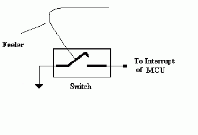
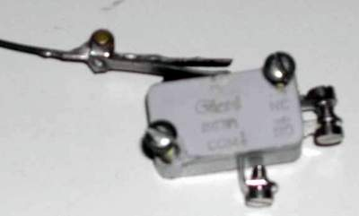
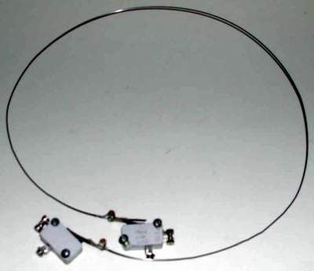
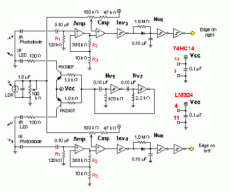
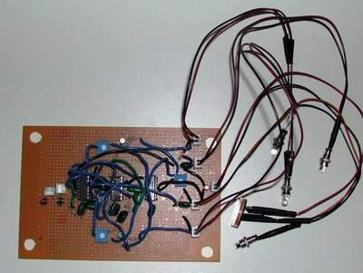
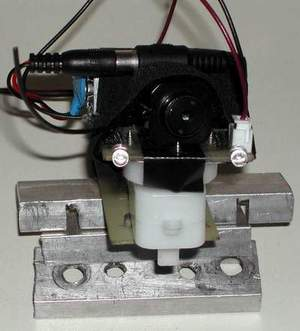
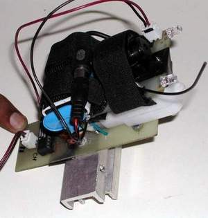
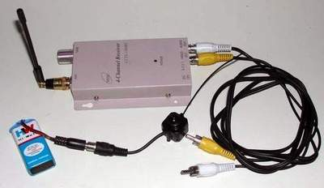

Sensors in FIRE are of two types:
- Touch sensors for obstacle detection
- Infrared sensors for edge detection like staircases and ditches
Sensor signals are fed to the interrupt of the MCU and need to be active low.
There are two sensors of each type in FIRE. One is for the left side edge and obstacle detection and the other is for the right side edge and obstacle detection. The outputs of the sensors from each side are combined and fed to the interrupt pin of the MCU. Since the MCU provides two interrupt pins both are used.
Touch Sensor
FIRE uses simple switches as obstacle sensors. A metal wire is soldered to the trigger of the switch. Every time the obstacle presses this wire the switch-state is changed from open to close. One terminal of the switch is connected to the ground and the other terminal of the switch is connected to the interrupt pin of the MCU. Hence when an obstacle is encountered a low signal is available at the MCU and an interrupt is triggered which can perform the back up operation of FIRE.


(Touch switch)

Left and right Sensor with wire
The wire used to make the sensor is #18 piano wire available in music shops. They can be soldered and bent easily.
IR Sensor
The IR edge detection circuit utilizes artificial nervous networks for its functioning. The original design by Bruce Robinson has been modified to do the job. See http://www3.telus.net/rfws/beam/hider/m_hidr_03.html

(Modified from above site)
The biggest problem with using infrared for edge detection is that there is a lot of infrared light bouncing around in the environment. Since it's invisible we simply aren't aware of it. It is very easy for the reflected signal from an IR LED to get lost against the background. Commercial transmitter/receiver devices get around the problem by sending high frequency pulses of IR so the same principle is used with FIRE's edge detectors.
A single assymetrical bicore (closed loop of 2 neurons Nv1 & Nv2) generates pulses for both IR transmitters. The output signal is about 0.5% of the total cycle time so average power consumption is quite small. The bicore output is used to switch on a pair of transistors, one for each side of the robot. The transistor collectors are connected to the IR LED's through 100 ohm resistors, giving a signal current of about 40 mA to each LED. This is strong enough to produce a response in the receiver, even with plenty of background IR. Because of the short output time, the average current draw is 0.2 mA per transmitter.
The receiver processes the reflected signals in five stages after it is picked up by the IR photodiode. First a 0.1 uF capacitor filters out the background IR, allowing only the pulse to pass through. A 120k resistor (R1) restores the capacitor output to GND potential when there are variations in background IR. The filtered signal is very small so the second stage (Amp) is an op-amp configured as an amplifier. The third stage (Cmp) is a comparator (LM324 OPAMP) which uses another op-amp to compare the amplified signal to an adjustable threshold. The fourth stage is a Schmitt inverter (Inv3 & Inv4) which cleans up the op-amp output and gives a high-going pulse each time an LED flash is detected. Finally, the last stage is a conventional Nu neuron (Nu5 & Nu6). Each pulse received will reset the Nu, maintaining a low output. If two consecutive pulses are missed the output goes high indicating a loss of signal -- usually caused by a drop-off. Since an active low signal is needed to trigger interrupts another inverter is added at the output.
The receiver is very sensitive to ambient light levels. It detects signals much more easily in darker conditions and can pick up a signal from a long distance. In other words, the robot might not recognize a stairwell as a hazard in dim light. Compensation is done for this by using a simple LDR (photocell) in parallel with a 1.0 uF capacitor and a trimpot to sense the ambient light level in front of the robot. This changes the trigger threshold of the two comparitors as background light levels change.
The amplifier is a critical part of the receiver. If the gain (amplification) is too small, a signal might not be detected. If it is too high, a very distant signal might be received. A gain of 30 is ideal. This is set by resistors (R2) and (R3), and is calculated by the formula (R2 + R3)/R3. This is the edge detection circuit of FIRE.
The logic of control on sensor trigger is simple. If a left edge or left obstacle is triggered it means that the robot is moving towards right direction. In this case the MPU has to give signals to the motors to first back up for some distance and then move in an angle very much to the right side to continue motion without collision or falling of from an edge.
If a right edge or right obstacle is triggered it means that the robot is moving towards left direction. In this case the MPU has to give signals to the motors to first back up for some distance and then move in an angle very much to the left side to continue motion without collision or falling of from an edge.

Camera Head
The camera head is mounted on the front part of the robot on the
aluminium frame, which gives it a full view of the surroundings.
The camera implemented is commonly used for CCTV surveillance. It has
a wireless transmitter and is powered by a 9V battery. The 4 channel
receiver has a range of 100m and can be connected to a television for
audio-video input.


